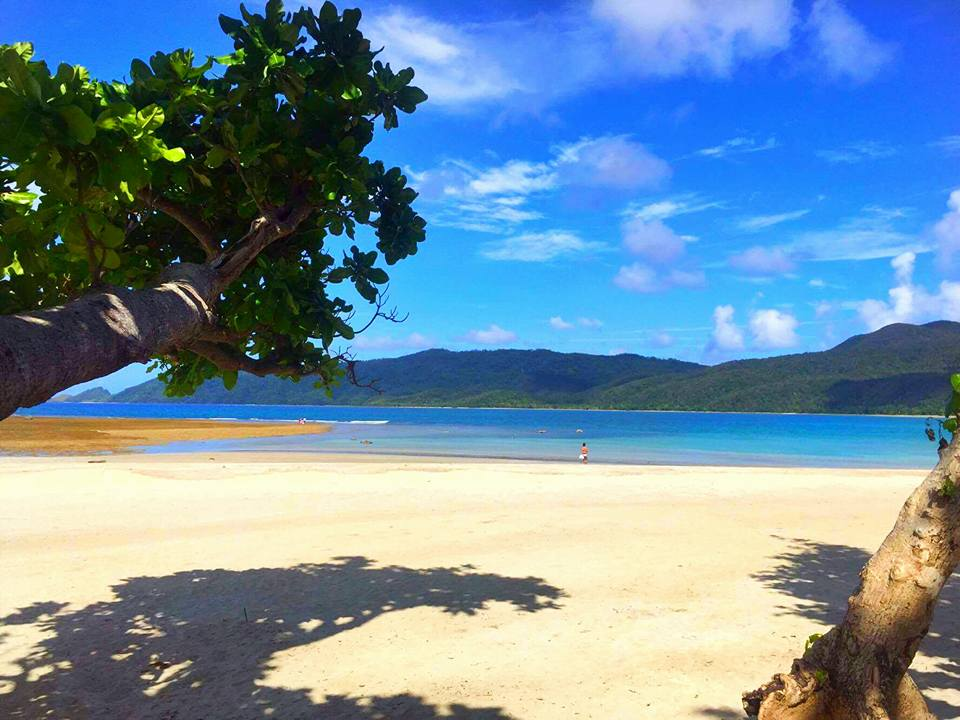
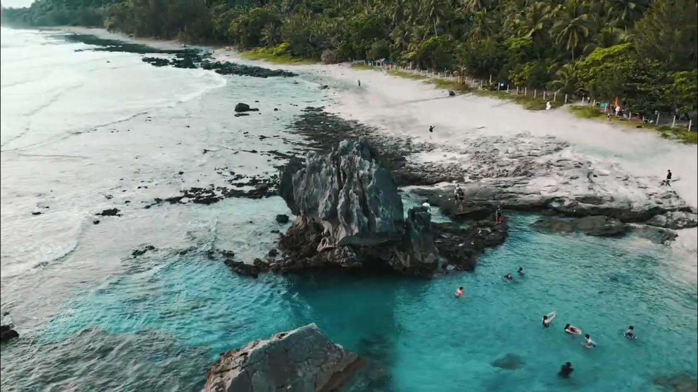
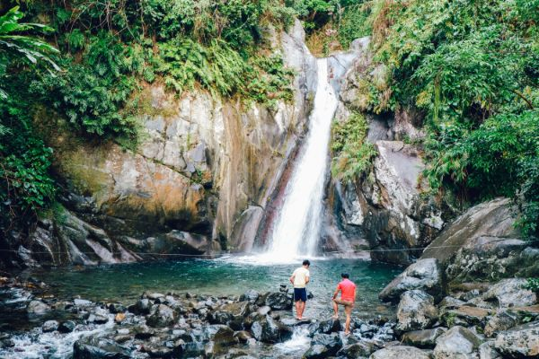
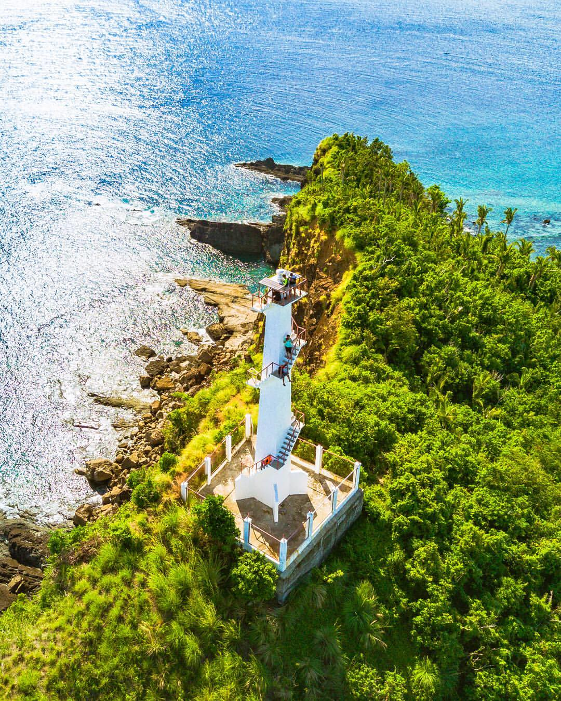

Featured Spots
Must-Visit
BeachCasapsapan Beach
A peaceful beach with beautiful sunrise views and calm Pacific waters.
View Details →
Tidal PoolTibu Tidal Pool
A natural tidal pool perfect for relaxing, snorkeling, and photography.
View Details →
WaterfallBulawan Falls
A hidden waterfall cascading over golden-hued rocks deep in the forest interior.
View Details →Beaches
Coastal Beach
Beach
Dianao Beach
A quiet beach perfect for relaxation and enjoying ocean views.
View Details → Beach
Beach
Cuaresma Beach
A peaceful hidden beach known for its natural beauty and serenity.
View Details → Beach
Beach
Motiong Beach
A remote coastal destination ideal for nature lovers and campers.
View Details →Nature Attractions
Eco Waterfall
Waterfall
Gayusan Falls
A scenic waterfall surrounded by lush tropical greenery.
View Details → River
River
Amro River – Lawang Dam
A protected natural area with rich forest and river ecosystems.
View Details →Landmarks
Heritage
LandmarkOntok Lighthouse
A lighthouse overlooking Casiguran Bay and the vast Pacific Ocean.
View Details → Church
Church
Nuestra Señora Dela Ermita
A historic church and beloved cultural landmark in Casiguran since 1604.
View Details →